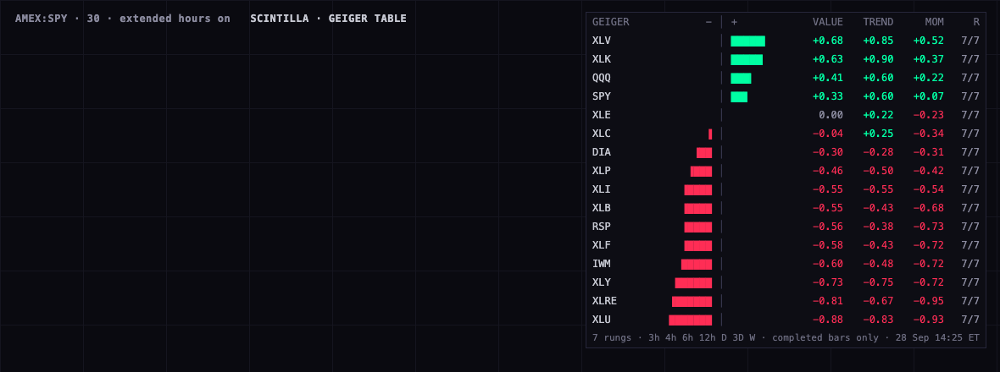

The Geiger, as a table on TradingView
A TradingView indicator that draws the Hub's Geiger for a list of symbols in one table: a bar centred at zero (green when the Geiger is above zero, red below), the Geiger value, and its two families, TREND and MOMENTUM. It uses the same seven timeframes and today's saved Equalizer weights as the Hub.
What it will look like

This is a mock drawn in a web browser with the script's own glyphs, colours and order, filled with the values the script's maths gives on today's bars (28 Sep, from the bars the Hub's Geiger read at 18:25 UTC). It is not a TradingView screenshot: I did not open or touch your TradingView.
How to put it on the rotation
- In TradingView open the Pine Editor, start a new indicator, select everything and paste the script (the file
SCINTILLA-GEIGER-TABLE.pine, or the copy at the bottom of this page). Save, then Add to chart. - Use a chart with extended hours on, at 30 minutes or faster. SPY at 30 minutes is a good choice.
- In the indicator's settings, List picks the rows: Sectors + indexes (the 11 SPDR sectors + SPY QQQ IWM DIA RSP),
Alan's names (the first 20 names on your LIKED list, in the order you liked them), or Custom (20 boxes; type
EXCHANGE:SYMBOL, e.g.NASDAQ:NVDA). - Rows are sorted from the highest Geiger down; untick Sort by Geiger to keep your list order. R shows how many of the seven timeframes gave a reading.
The header of the script says PLOTS 0/64 (it only draws a table) and REQUESTS 40/40 (two per row, twenty rows).
Where each number comes from
- The seven timeframes and their weights are the Hub's saved Equalizer, read today from the database and matching what the live Geiger reports: 3h 1.24 · 4h 2.28 · 6h 3.18 · 12h 3.17 · D 3.18 · 3D 2.58 · W 0.99. TREND and MOMENTUM count half each; inside MOMENTUM, RSI counts 0.6 and Williams %R 0.4. They are editable in the settings under “Equalizer”, so if you move a slider in the Hub, type the same number here.
- TREND on each timeframe: nine averages of the close (5, 8, 13, 21, 34-bar exponential; 50, 100, 150, 200-bar simple). The more of them sit in order, fastest on top, the closer to +1; fully upside down is −1.
- MOMENTUM on each timeframe: RSI(14) scaled so 23 is −1 and 77 is +1, blended with Williams %R(14) scaled so −90 is −1 and −10 is +1.
- The Geiger is the weighted average over the seven timeframes. Only finished bars count, never the bar still forming, exactly as the Hub.
- The bars are TradingView's. The script builds the 3h, 4h, 6h and 12h bars itself from 30-minute bars, on the same New York clock as the Hub, and the 3-day and weekly bars from daily bars, on the same calendar as the Hub.
Check against the live Geiger · 10 symbols · today
TradingView can't be run from here, so I tested the script's method in three parts, all on the Hub's own bars. First, the maths: a line-for-line copy of the script's maths, run on the exact bars the live Geiger read. Second, the rebuilt bars: the script's bucket rules applied to the Hub's 30-minute and daily bars, then compared with the 3h/4h/6h/12h/3D/W bars the Hub serves. Third, the daily bar: whether the Hub's daily bar is built like TradingView's regular-session daily bar.
| Symbol | Hub Geiger (live) | Script maths (same bars) | Gap | Timeframes identical |
3h–12h bars rebuilt = served | 3D + W bars rebuilt = served | Daily open/high/low = regular session | 1-cent noise moves it (95%) |
|---|---|---|---|---|---|---|---|---|
| SPY | +0.3334 | +0.3334 | <0.000001 | 7/7 | all 112 | all 460 | 6/6 | 0.0003 |
| QQQ | +0.4072 | +0.4072 | <0.000001 | 7/7 | all 112 | all 460 | 6/6 | 0.0001 |
| IWM | -0.6028 | -0.6028 | <0.000001 | 7/7 | all 112 | all 460 | 6/6 | 0.0003 |
| DIA | -0.2973 | -0.2973 | <0.000001 | 7/7 | all 113 | all 460 | 6/6 | 0.0003 |
| RSP | -0.5566 | -0.5566 | <0.000001 | 7/7 | all 142 | all 460 | 7/7 | 0.0004 |
| XLK | +0.6342 | +0.6342 | <0.000001 | 7/7 | all 120 | all 460 | 6/6 | 0.0005 |
| XLE | -0.0049 | -0.0049 | <0.000001 | 7/7 | all 112 | all 460 | 6/6 | 0.0014 |
| XLF | -0.5757 | -0.5757 | <0.000001 | 7/7 | all 112 | all 460 | 6/6 | 0.0027 |
| XLV | +0.6841 | +0.6841 | <0.000001 | 7/7 | all 145 | all 460 | 7/7 | 0.0009 |
| XLU | -0.8796 | -0.8796 | <0.000001 | 7/7 | all 116 | all 460 | 6/6 | 0.0015 |
Live Geiger computed 2026-09-28T18:21:02.262Z; check run 2026-09-28T18:24:34.073Z. The largest gap is 0.0000004, which is only the rounding of the published numbers (the Hub publishes six decimals). The rebuilt-bar columns count every finished bucket both sides had (intraday: the ~7 days of 30-minute bars the API serves; 3D and weekly: 230 each). The daily close is the official closing price in both places, not the last 30-minute trade, so only open/high/low are compared.
What this proves: if TradingView's prices equal the Hub's, the table shows the Hub's Geiger. What it does not prove: that TradingView's prices are equal. That can only be checked on TradingView itself, by putting the table and the Hub side by side on the same symbols.
What could be wrong
- Prices come from TradingView, not Massive. The Hub reads Massive's bars. TradingView has its own feed, and an after-hours print or a daily high can differ by a cent. I nudged every bar of the ten symbols by up to a cent in either direction, 300 times: the Geiger moved at most 0.0046, below the 0.01 the table shows. A bigger feed difference (a missing after-hours bar, a bad print) would move it more.
- The daily bar counts as finished at the 16:00 close. The Hub waits for its settled-close step before it uses the day. Between 16:00 and that step, the table on TradingView already uses today's daily bar and the Hub still uses yesterday's, so the two can differ for those hours.
- The intraday rungs are rebuilt, not taken from TradingView's own 3h/6h/12h bars. TradingView starts its multi-hour bars at the session open (04:00). The Hub's start on the New York clock (3h at 00, 03, 06 …). The script rolls 30-minute extended-hours bars into the Hub's buckets instead. On the ten symbols this rebuild matched every bucket the API served.
- Daylight-saving change days. On the two days a year the clocks change, the end time of the last bucket of the day is off by one hour. Which bucket each bar falls in is still right; only the moment a bucket counts as finished shifts.
- How much history your TradingView plan loads. The 12h rung needs about 3,200 thirty-minute bars for its full nine-line fan. TradingView plans load 5,000 to 20,000 bars, which is enough; if a symbol has less, the rung uses fewer lines, as the Hub does for young listings.
- The chart the table sits on. Put it on a chart with extended hours on, at 30 minutes or faster (or a 24-hour symbol). On a regular-hours-only chart the script reads the other symbols as of that chart's last bar, so after 16:00 it can miss the after-hours buckets.
- Twenty rows at most. Each row needs two TradingView data requests and TradingView allows 40. More rows would need a second copy of the script with its own list.
What I did not do
- The script has not been compiled on TradingView. There is no TradingView checker in this session, and the brief says not to use your editor. I read it through line by line for Pine v6 rules, but the first paste is its first compile. If TradingView shows an error, send me the line and message.
- I did not open, inject into or change anything on your TradingView, and I did not deploy this page.
- Your FAVORITES and RADAR lists are empty today, so “Alan's names” uses the first 20 of your 128 LIKED names, leaving out non-stock codes (BTCUSD, SIUSD, GCUSD, CLUSD, VIX), SPY and QQQ (already in the first list) and DRAM (I'm not sure of its exchange). TSM, the next name, takes the last row.
- The exchange for each preset symbol is written in by hand (AMEX for the SPDR funds, SPY, IWM, DIA and RSP; NASDAQ for QQQ and most names; NYSE for ANET and TSM). If one shows “n/a”, retype it in a Custom box with the exchange TradingView shows.
The script
//@version=6
// ═══════════════════════════════════════════════════════════════════════════════════════════════
// SCINTILLA · GEIGER TABLE · v1 · 28 Sep 2026 · dispatch SCINTILLA-20260928-N8
// PLOTS 0/64 (a table only — no plot(), no fill(); tables are outside the plot budget)
// REQUESTS 40/40 (2 per row × 20 rows: one 30-minute extended-hours call, one daily call)
//
// WHAT IT IS. The Hub's Geiger (chart API /geiger) rebuilt in Pine for a list of symbols, shown as
// a table: a bar centred at zero (green up, red down), the Geiger value, TREND and MOMENTUM.
//
// THE MATHS (copied in behaviour from the provider's services/hot-query/geiger-publish-artifact.mjs):
// · Seven rungs with today's saved Equalizer weights: 3h 1.235817 · 4h 2.278755 · 6h 3.178477 ·
// 12h 3.172702 · D 3.178477 · 3D 2.576738 · W 0.987499 (public.operator_weights, 28 Sep).
// · Each rung reads its newest 230 COMPLETED bars (the forming bar is never used).
// · TREND: the 9-line fan EMA 5/8/13/21/34 + SMA 50/100/150/200 (a line exists only when the rung
// has that many bars). trend = (2 × pairs in order − pairs) / pairs, where "in order" means
// line i is above line i+1. −1 … +1.
// · MOMENTUM: RSI(14) (Wilder, seeded at the window start) mapped 23→−1 … 77→+1, and Williams %R(14)
// mapped −90→−1 … −10→+1, each clamped, mixed RSI 0.6 / Williams 0.4.
// · Rung value = 0.5 × TREND + 0.5 × MOMENTUM (TREND alone when momentum cannot be computed).
// · GEIGER = weighted mean of the rung values; TREND and MOMENTUM columns = the same weighted means
// of each family (MOMENTUM only over rungs that computed it).
// · A 3h/4h/6h/12h rung whose newest bar is on an older New York date than the D rung's newest
// bar is left out, as the publisher does.
//
// HOW THE RUNGS ARE BUILT (why this fits 20 symbols in 40 requests).
// · 3h 4h 6h 12h are rolled up here from 30-minute EXTENDED-HOURS bars into New York clock buckets
// (3h: 00 03 06 … · 4h: 00 04 08 … · 6h: 00 06 12 18 · 12h: 00 12), exactly as the chart API
// builds them. TradingView's own 3h/6h/12h bars start at the session open instead, so they
// would not match.
// · D is TradingView's regular-session daily bar. 3D is rolled up from D into calendar 3-day
// buckets (bucket = floor((epoch day − 2) / 3)); W into Sunday-anchored weeks — both as the API.
//
// KNOWN DIFFERENCES FROM THE HUB (read the page for the numbers):
// 1. Prices come from TradingView's feed, not Massive. Extended-hours prints and daily highs/lows
// can differ by a cent or two, which can flip a close fan pair or nudge Williams %R.
// 2. The D bar counts as finished at the 16:00 close; the Hub waits for its settled-close step,
// so between the close and that step the two can read different days.
// 3. On the two daylight-saving change days the end time of the last intraday bucket is off
// by an hour (which bucket a bar belongs to is still correct).
// 4. Intraday history is limited by your TradingView plan. The 12h rung needs about 3,200
// 30-minute bars for its full nine-line fan; with less, it uses fewer lines (as the Hub does
// for young listings).
// 5. Put it on a chart with EXTENDED HOURS ON (any timeframe from 1 minute to 30 minutes works
// best), or on a 24-hour symbol. On a regular-hours-only chart after 16:00 the table can lag
// the after-hours buckets until the next session.
//
// PASTE: Pine Editor → new indicator → select all → paste → Save → Add to chart.
// ═══════════════════════════════════════════════════════════════════════════════════════════════
indicator("SCINTILLA · GEIGER TABLE", shorttitle = "GEIGER TABLE", overlay = true)
// ── constants ──────────────────────────────────────────────────────────────────────────────────
const string TZ = "America/New_York"
const int DAY_MS = 86400000
const int RECENT_I = 4 * 86400000 // intraday readings are computed on the last four days of bars only (speed; covers a long weekend)
const int RECENT_D = 10 * 86400000 // daily readings: the last ten days of bars
const int WINDOW = 230
const float RSI_OS = 23.0
const float RSI_OB = 77.0
const float W_OS = -90.0
const float W_OB = -10.0
const string P_A = "Sectors + indexes"
const string P_B = "Alan's names"
const string P_C = "Custom"
// colours — greys (channels within 24 of each other, none above 210) + the Hub's bull/bear
const color C_BULL = #00FFA3
const color C_BEAR = #FF2D55
const color C_PANEL = #0D0D14
const color C_FRAME = #252538
const color C_AXIS = #3A3A52
const color C_INK = #C6C8D2
const color C_DIM = #8A8A9E
const color C_HEAD = #6E6E82
// ── inputs ─────────────────────────────────────────────────────────────────────────────────────
const string G_ROWS = "Rows"
string preset = input.string(P_A, "List", options = [P_A, P_B, P_C], group = G_ROWS,
tooltip = "Sectors + indexes: the 11 SPDR sectors + SPY QQQ IWM DIA RSP. Alan's names: the first 20 LIKED equities in the order they were liked. Custom: the 20 boxes below (EXCHANGE:SYMBOL, e.g. NASDAQ:NVDA; leave a box empty to hide the row).")
bool sortRows = input.bool(true, "Sort by Geiger (high → low)", group = G_ROWS)
string c01 = input.string("", "Custom 1", group = G_ROWS, inline = "c1")
string c02 = input.string("", "2", group = G_ROWS, inline = "c1")
string c03 = input.string("", "3", group = G_ROWS, inline = "c2")
string c04 = input.string("", "4", group = G_ROWS, inline = "c2")
string c05 = input.string("", "5", group = G_ROWS, inline = "c3")
string c06 = input.string("", "6", group = G_ROWS, inline = "c3")
string c07 = input.string("", "7", group = G_ROWS, inline = "c4")
string c08 = input.string("", "8", group = G_ROWS, inline = "c4")
string c09 = input.string("", "9", group = G_ROWS, inline = "c5")
string c10 = input.string("", "10", group = G_ROWS, inline = "c5")
string c11 = input.string("", "11", group = G_ROWS, inline = "c6")
string c12 = input.string("", "12", group = G_ROWS, inline = "c6")
string c13 = input.string("", "13", group = G_ROWS, inline = "c7")
string c14 = input.string("", "14", group = G_ROWS, inline = "c7")
string c15 = input.string("", "15", group = G_ROWS, inline = "c8")
string c16 = input.string("", "16", group = G_ROWS, inline = "c8")
string c17 = input.string("", "17", group = G_ROWS, inline = "c9")
string c18 = input.string("", "18", group = G_ROWS, inline = "c9")
string c19 = input.string("", "19", group = G_ROWS, inline = "c10")
string c20 = input.string("", "20", group = G_ROWS, inline = "c10")
const string G_EQ = "Equalizer (today's saved weights)"
float w3h = input.float(1.235817, "3h", minval = 0, group = G_EQ, inline = "e1")
float w4h = input.float(2.278755, "4h", minval = 0, group = G_EQ, inline = "e1")
float w6h = input.float(3.178477, "6h", minval = 0, group = G_EQ, inline = "e2")
float w12h = input.float(3.172702, "12h", minval = 0, group = G_EQ, inline = "e2")
float w1d = input.float(3.178477, "D", minval = 0, group = G_EQ, inline = "e3")
float w3d = input.float(2.576738, "3D", minval = 0, group = G_EQ, inline = "e3")
float w1w = input.float(0.987499, "W", minval = 0, group = G_EQ, inline = "e4")
float famT = input.float(0.5, "TREND", minval = 0, group = G_EQ, inline = "f1")
float famM = input.float(0.5, "MOMENTUM", minval = 0, group = G_EQ, inline = "f1")
float mixR = input.float(0.6, "RSI", minval = 0, group = G_EQ, inline = "f2")
float mixW = input.float(0.4, "Williams", minval = 0, group = G_EQ, inline = "f2")
const string G_LOOK = "Look"
string baseTf = input.string("30", "Intraday base bars", options = ["30", "60"], group = G_LOOK,
tooltip = "30 minutes always lines up with the New York clock buckets. 60 is lighter but only matches if TradingView's extended-hours hourly bars start on the hour.")
int barW = input.int(8, "Bar width (blocks per side)", minval = 3, maxval = 20, group = G_LOOK)
string tPos = input.string("top_right", "Position", options = ["top_right", "top_left", "middle_right", "middle_left", "bottom_right", "bottom_left"], group = G_LOOK)
string tSize = input.string("small", "Text size", options = ["tiny", "small", "normal"], group = G_LOOK)
// ── symbol slots (simple strings; empty = hidden row) ──────────────────────────────────────────
pick(string a, string b, string c) => preset == P_A ? a : preset == P_B ? b : c
string s01 = pick("AMEX:XLB", "NASDAQ:SNDK", c01)
string s02 = pick("AMEX:XLE", "NASDAQ:NBIS", c02)
string s03 = pick("AMEX:XLF", "NASDAQ:MU", c03)
string s04 = pick("AMEX:XLI", "NASDAQ:CRDO", c04)
string s05 = pick("AMEX:XLK", "NASDAQ:GOOGL", c05)
string s06 = pick("AMEX:XLP", "NASDAQ:CIFR", c06)
string s07 = pick("AMEX:XLRE", "NASDAQ:USAR", c07)
string s08 = pick("AMEX:XLU", "NASDAQ:ARM", c08)
string s09 = pick("AMEX:XLV", "NASDAQ:AMAT", c09)
string s10 = pick("AMEX:XLY", "NASDAQ:ASTS", c10)
string s11 = pick("AMEX:XLC", "NASDAQ:APLD", c11)
string s12 = pick("AMEX:SPY", "NASDAQ:CRWV", c12)
string s13 = pick("NASDAQ:QQQ", "NASDAQ:MSTR", c13)
string s14 = pick("AMEX:IWM", "NYSE:ANET", c14)
string s15 = pick("AMEX:DIA", "NASDAQ:ASML", c15)
string s16 = pick("AMEX:RSP", "NASDAQ:AMD", c16)
string s17 = pick("", "NASDAQ:ALAB", c17)
string s18 = pick("", "NASDAQ:IREN", c18)
string s19 = pick("", "NASDAQ:TSLA", c19)
string s20 = pick("", "NYSE:TSM", c20)
// ── one rung's reading from its newest completed bars (oldest → newest) ────────────────────────
clamp1(float x) => math.max(-1.0, math.min(1.0, x))
rungRead(array<float> c, array<float> h, array<float> l) =>
int n = array.size(c)
float trend = na
float mom = na
float comp = na
if n >= 8
// fan: EMAs seeded at the first bar of the window, SMAs over their own length
float x0 = array.get(c, 0)
float e5 = x0
float e8 = x0
float e13 = x0
float e21 = x0
float e34 = x0
for i = 1 to n - 1
float x = array.get(c, i)
e5 := x * (2.0 / 6.0) + e5 * (1.0 - 2.0 / 6.0)
e8 := x * (2.0 / 9.0) + e8 * (1.0 - 2.0 / 9.0)
e13 := x * (2.0 / 14.0) + e13 * (1.0 - 2.0 / 14.0)
e21 := x * (2.0 / 22.0) + e21 * (1.0 - 2.0 / 22.0)
e34 := x * (2.0 / 35.0) + e34 * (1.0 - 2.0 / 35.0)
array<float> fan = array.new<float>()
array.push(fan, e5)
array.push(fan, e8)
if n >= 13
array.push(fan, e13)
if n >= 21
array.push(fan, e21)
if n >= 34
array.push(fan, e34)
array<int> smaLens = array.from(50, 100, 150, 200)
for len in smaLens
if n >= len
float s = 0.0
for j = n - len to n - 1
s += array.get(c, j)
array.push(fan, s / len)
int pairs = array.size(fan) - 1
int inOrder = 0
for i = 0 to pairs - 1
if array.get(fan, i) > array.get(fan, i + 1)
inOrder += 1
trend := (2.0 * inOrder - pairs) / pairs
comp := trend
if n >= 15
// RSI(14), Wilder, seeded with the simple average of the first 14 changes
float g = 0.0
float ls = 0.0
for i = 1 to 14
float d = array.get(c, i) - array.get(c, i - 1)
if d > 0
g += d
else
ls -= d
g /= 14.0
ls /= 14.0
if n > 15
for i = 15 to n - 1
float d = array.get(c, i) - array.get(c, i - 1)
g := (g * 13.0 + (d > 0 ? d : 0.0)) / 14.0
ls := (ls * 13.0 + (d < 0 ? -d : 0.0)) / 14.0
float rsi = 100.0 - 100.0 / (1.0 + (ls == 0 ? 1e9 : g / ls))
// Williams %R(14)
float hh = -1e18
float ll = 1e18
for j = n - 14 to n - 1
hh := math.max(hh, array.get(h, j))
ll := math.min(ll, array.get(l, j))
float close0 = array.get(c, n - 1)
float wr = hh > ll ? (hh - close0) / (hh - ll) * -100.0 : -50.0
float mw = mixR + mixW > 0 ? mixR + mixW : 1.0
mom := (clamp1((rsi - RSI_OS) / (RSI_OB - RSI_OS) * 2.0 - 1.0) * mixR + clamp1((wr - W_OS) / (W_OB - W_OS) * 2.0 - 1.0) * mixW) / mw
float fw = famT + famM > 0 ? famT + famM : 1.0
comp := (famT * trend + famM * mom) / fw
[trend, mom, comp]
// ── roll incoming bars into buckets; read the newest 230 completed ones ────────────────────────
// bid : this bar's bucket id (changes when a new bucket starts)
// curDone : the bucket this bar sits in has already ended by the clock (so it counts as completed)
// bdate : the New York date (yyyymmdd) of this bucket's first bar
// doCalc : compute the reading on this bar (only the newest few days, to save time)
rollRung(int bid, bool curDone, int bdate, bool doCalc) =>
var array<float> cA = array.new<float>()
var array<float> hA = array.new<float>()
var array<float> lA = array.new<float>()
var int curId = na
var float curH = na
var float curL = na
var float curC = na
var int curDate = na
var int lastDate = na
if na(curId) or bid != curId
if not na(curId)
array.push(cA, curC)
array.push(hA, curH)
array.push(lA, curL)
if array.size(cA) > WINDOW
array.shift(cA)
array.shift(hA)
array.shift(lA)
lastDate := curDate
curId := bid
curH := high
curL := low
curC := close
curDate := bdate
else
curH := math.max(curH, high)
curL := math.min(curL, low)
curC := close
float tr = na
float mo = na
float co = na
int nd = na
if doCalc
array<float> c2 = array.copy(cA)
array<float> h2 = array.copy(hA)
array<float> l2 = array.copy(lA)
nd := lastDate
if curDone
array.push(c2, curC)
array.push(h2, curH)
array.push(l2, curL)
if array.size(c2) > WINDOW
array.shift(c2)
array.shift(h2)
array.shift(l2)
nd := curDate
[t1, m1, k1] = rungRead(c2, h2, l2)
tr := t1
mo := m1
co := k1
[tr, mo, co, nd]
// New York clock bucket of N hours for the current bar: [start, end]
clockBucket(int nh) =>
int y = year(time, TZ)
int mo = month(time, TZ)
int d = dayofmonth(time, TZ)
int k = math.floor(hour(time, TZ) / nh)
int s = timestamp(TZ, y, mo, d, k * nh, 0)
int e = (k + 1) * nh >= 24 ? timestamp(TZ, y, mo, d, 0, 0) + DAY_MS : timestamp(TZ, y, mo, d, (k + 1) * nh, 0)
[s, e]
// evaluated on the 30-minute extended-hours bars of one symbol
intraRungs() =>
int dkey = year(time, TZ) * 10000 + month(time, TZ) * 100 + dayofmonth(time, TZ)
bool doCalc = time >= timenow - RECENT_I
[s3, e3] = clockBucket(3)
[s4, e4] = clockBucket(4)
[s6, e6] = clockBucket(6)
[s12, e12] = clockBucket(12)
[t3, m3, k3, n3] = rollRung(s3, timenow >= e3, dkey, doCalc)
[t4, m4, k4, n4] = rollRung(s4, timenow >= e4, dkey, doCalc)
[t6, m6, k6, n6] = rollRung(s6, timenow >= e6, dkey, doCalc)
[t12, m12, k12, n12] = rollRung(s12, timenow >= e12, dkey, doCalc)
[t3, m3, k3, n3, t4, m4, k4, n4, t6, m6, k6, n6, t12, m12, k12, n12]
// evaluated on the regular-session daily bars of one symbol
epochDay(int t) => math.floor(timestamp("UTC", year(t, TZ), month(t, TZ), dayofmonth(t, TZ), 0, 0) / DAY_MS)
dailyRungs() =>
int dkey = year(time, TZ) * 10000 + month(time, TZ) * 100 + dayofmonth(time, TZ)
bool doCalc = time >= timenow - RECENT_D
int ed = epochDay(time)
int today = epochDay(timenow)
bool dayDone = timenow >= time_close
int b3 = math.floor((ed - 2) / 3)
int bw = math.floor((ed + 4) / 7)
[tD, mD, kD, nD] = rollRung(ed, dayDone, dkey, doCalc)
[t3, m3, k3, n3] = rollRung(b3, dayDone and b3 < math.floor((today - 2) / 3), dkey, doCalc)
[tW, mW, kW, nW] = rollRung(bw, dayDone and bw < math.floor((today + 4) / 7), dkey, doCalc)
[tD, mD, kD, nD, t3, m3, k3, tW, mW, kW]
// ── one row: two requests, then the Equalizer-weighted mean ────────────────────────────────────
addW(float w, float v) => w > 0 and not na(v) ? w : 0.0
addV(float w, float v) => w > 0 and not na(v) ? w * v : 0.0
geigerRow(string sym) =>
string s = sym == "" ? syminfo.tickerid : sym
string sx = ticker.modify(s, session.extended)
[t3, m3, k3, n3, t4, m4, k4, n4, t6, m6, k6, n6, t12, m12, k12, n12] = request.security(sx, baseTf, intraRungs(), lookahead = barmerge.lookahead_on)
[tD, mD, kD, nD, t3d, m3d, k3d, tW, mW, kW] = request.security(s, "D", dailyRungs(), lookahead = barmerge.lookahead_on)
// an intraday rung whose newest bucket is on an older New York date than the D rung is left out
bool ok3 = not na(k3) and (na(nD) or n3 >= nD)
bool ok4 = not na(k4) and (na(nD) or n4 >= nD)
bool ok6 = not na(k6) and (na(nD) or n6 >= nD)
bool ok12 = not na(k12) and (na(nD) or n12 >= nD)
float a3 = ok3 ? w3h : 0.0
float a4 = ok4 ? w4h : 0.0
float a6 = ok6 ? w6h : 0.0
float a12 = ok12 ? w12h : 0.0
float ws = addW(a3, k3) + addW(a4, k4) + addW(a6, k6) + addW(a12, k12) + addW(w1d, kD) + addW(w3d, k3d) + addW(w1w, kW)
float gc = addV(a3, k3) + addV(a4, k4) + addV(a6, k6) + addV(a12, k12) + addV(w1d, kD) + addV(w3d, k3d) + addV(w1w, kW)
float gt = addV(a3, t3) + addV(a4, t4) + addV(a6, t6) + addV(a12, t12) + addV(w1d, tD) + addV(w3d, t3d) + addV(w1w, tW)
float wm = addW(a3, m3) + addW(a4, m4) + addW(a6, m6) + addW(a12, m12) + addW(w1d, mD) + addW(w3d, m3d) + addW(w1w, mW)
float gm = addV(a3, m3) + addV(a4, m4) + addV(a6, m6) + addV(a12, m12) + addV(w1d, mD) + addV(w3d, m3d) + addV(w1w, mW)
int nr = (addW(a3, k3) > 0 ? 1 : 0) + (addW(a4, k4) > 0 ? 1 : 0) + (addW(a6, k6) > 0 ? 1 : 0) + (addW(a12, k12) > 0 ? 1 : 0) + (addW(w1d, kD) > 0 ? 1 : 0) + (addW(w3d, k3d) > 0 ? 1 : 0) + (addW(w1w, kW) > 0 ? 1 : 0)
[ws > 0 ? gc / ws : na, ws > 0 ? gt / ws : na, wm > 0 ? gm / wm : na, nr]
[g01, tr01, mo01, r01] = geigerRow(s01)
[g02, tr02, mo02, r02] = geigerRow(s02)
[g03, tr03, mo03, r03] = geigerRow(s03)
[g04, tr04, mo04, r04] = geigerRow(s04)
[g05, tr05, mo05, r05] = geigerRow(s05)
[g06, tr06, mo06, r06] = geigerRow(s06)
[g07, tr07, mo07, r07] = geigerRow(s07)
[g08, tr08, mo08, r08] = geigerRow(s08)
[g09, tr09, mo09, r09] = geigerRow(s09)
[g10, tr10, mo10, r10] = geigerRow(s10)
[g11, tr11, mo11, r11] = geigerRow(s11)
[g12, tr12, mo12, r12] = geigerRow(s12)
[g13, tr13, mo13, r13] = geigerRow(s13)
[g14, tr14, mo14, r14] = geigerRow(s14)
[g15, tr15, mo15, r15] = geigerRow(s15)
[g16, tr16, mo16, r16] = geigerRow(s16)
[g17, tr17, mo17, r17] = geigerRow(s17)
[g18, tr18, mo18, r18] = geigerRow(s18)
[g19, tr19, mo19, r19] = geigerRow(s19)
[g20, tr20, mo20, r20] = geigerRow(s20)
// ── the table ──────────────────────────────────────────────────────────────────────────────────
dirColor(float v) => na(v) or math.abs(v) < 0.005 ? C_DIM : v > 0 ? C_BULL : C_BEAR
fmt(float v) => na(v) ? "n/a" : math.abs(v) < 0.005 ? "0.00" : (v > 0 ? "+" : "") + str.tostring(v, "0.00")
shortName(string s) =>
array<string> parts = str.split(s, ":")
array.get(parts, array.size(parts) - 1)
blocks(int n) =>
string out = ""
if n > 0
for i = 1 to n
out := out + "█"
out
// right-hand (positive) bar: whole blocks plus an eighth-block tail
barPos(float v) =>
float u = math.max(0.0, v) * barW
int f = math.floor(u)
int e = math.round((u - f) * 8)
string tail = e <= 0 ? "" : e == 1 ? "▏" : e == 2 ? "▎" : e == 3 ? "▍" : e == 4 ? "▌" : e == 5 ? "▋" : e == 6 ? "▊" : e == 7 ? "▉" : "█"
blocks(math.min(f, barW)) + (f >= barW ? "" : tail)
// left-hand (negative) bar, right-aligned: a half-block tail on the zero side is the finest glyph that hugs the right
barNeg(float v) =>
float u = math.max(0.0, -v) * barW
int f = math.floor(u)
string tail = u - f >= 0.75 ? "█" : u - f >= 0.25 ? "▐" : ""
(f >= barW ? "" : tail) + blocks(math.min(f, barW))
posOf(string p) =>
switch p
"top_left" => position.top_left
"middle_right" => position.middle_right
"middle_left" => position.middle_left
"bottom_right" => position.bottom_right
"bottom_left" => position.bottom_left
=> position.top_right
sizeOf(string s) => s == "tiny" ? size.tiny : s == "normal" ? size.normal : size.small
var table T = na
cellTxt(int col, int row, string txt, color tc, string ha) =>
table.cell(T, col, row, txt, text_color = tc, text_halign = ha, text_size = sizeOf(tSize), text_font_family = font.family_monospace, bgcolor = C_PANEL)
if barstate.islast
// rebuilt on every update, so the footer merge never meets an already-merged range
if not na(T)
table.delete(T)
T := table.new(posOf(tPos), 8, 23, bgcolor = C_PANEL, frame_color = C_FRAME, frame_width = 1, border_color = C_PANEL, border_width = 1)
array<string> syms = array.from(s01, s02, s03, s04, s05, s06, s07, s08, s09, s10, s11, s12, s13, s14, s15, s16, s17, s18, s19, s20)
array<float> gs = array.from(g01, g02, g03, g04, g05, g06, g07, g08, g09, g10, g11, g12, g13, g14, g15, g16, g17, g18, g19, g20)
array<float> trs = array.from(tr01, tr02, tr03, tr04, tr05, tr06, tr07, tr08, tr09, tr10, tr11, tr12, tr13, tr14, tr15, tr16, tr17, tr18, tr19, tr20)
array<float> mos = array.from(mo01, mo02, mo03, mo04, mo05, mo06, mo07, mo08, mo09, mo10, mo11, mo12, mo13, mo14, mo15, mo16, mo17, mo18, mo19, mo20)
array<int> rs = array.from(r01, r02, r03, r04, r05, r06, r07, r08, r09, r10, r11, r12, r13, r14, r15, r16, r17, r18, r19, r20)
// sort key: hidden rows last, then no-reading rows, then Geiger high → low
array<float> sortKey = array.new<float>()
for i = 0 to 19
float g = array.get(gs, i)
array.push(sortKey, array.get(syms, i) == "" ? -99.0 : na(g) ? -9.0 : g)
array<int> idx = sortRows ? array.sort_indices(sortKey, order.descending) : array.from(0, 1, 2, 3, 4, 5, 6, 7, 8, 9, 10, 11, 12, 13, 14, 15, 16, 17, 18, 19)
cellTxt(0, 0, "GEIGER", C_HEAD, text.align_left)
cellTxt(1, 0, "−", C_HEAD, text.align_right)
cellTxt(2, 0, "│", C_AXIS, text.align_center)
cellTxt(3, 0, "+", C_HEAD, text.align_left)
cellTxt(4, 0, "VALUE", C_HEAD, text.align_right)
cellTxt(5, 0, "TREND", C_HEAD, text.align_right)
cellTxt(6, 0, "MOM", C_HEAD, text.align_right)
cellTxt(7, 0, "R", C_HEAD, text.align_right)
int row = 1
for k = 0 to 19
int i = array.get(idx, k)
string s = array.get(syms, i)
if s != ""
float g = array.get(gs, i)
float tv = array.get(trs, i)
float mv = array.get(mos, i)
cellTxt(0, row, shortName(s), C_INK, text.align_left)
cellTxt(1, row, na(g) ? "" : barNeg(g), C_BEAR, text.align_right)
cellTxt(2, row, "│", C_AXIS, text.align_center)
cellTxt(3, row, na(g) ? "" : barPos(g), C_BULL, text.align_left)
cellTxt(4, row, fmt(g), dirColor(g), text.align_right)
cellTxt(5, row, fmt(tv), dirColor(tv), text.align_right)
cellTxt(6, row, fmt(mv), dirColor(mv), text.align_right)
cellTxt(7, row, str.tostring(array.get(rs, i)) + "/7", C_DIM, text.align_right)
row += 1
string asOf = str.format_time(timenow, "dd MMM HH:mm", TZ)
cellTxt(0, row, "7 rungs · 3h 4h 6h 12h D 3D W · completed bars only · " + asOf + " ET", C_HEAD, text.align_left)
table.merge_cells(T, 0, row, 7, row)